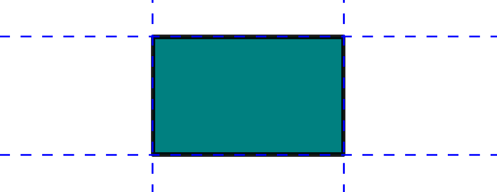
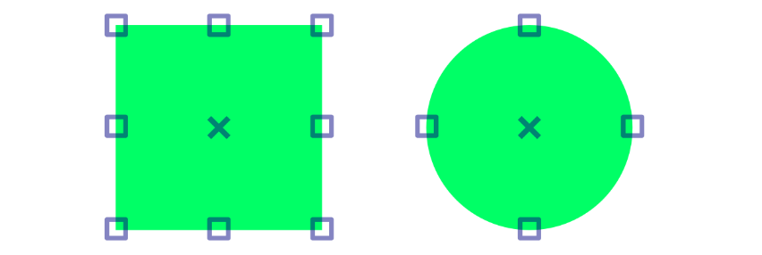
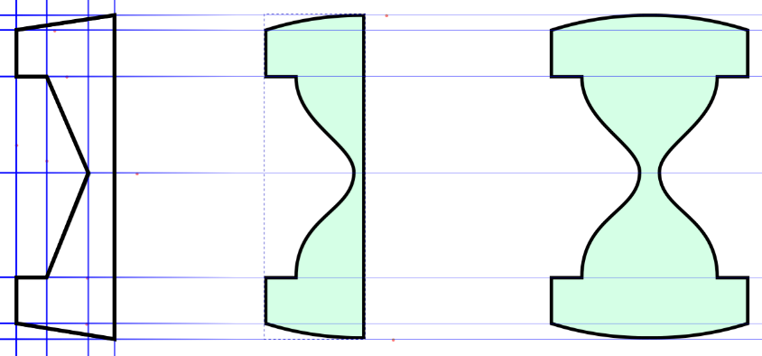

Usando guias e snaps
As guias são elementos que auxiliam a desenhar e que não são impressas nem exportadas, trata-se de linhas infinitas que podemos criar arrastando das réguas para dentro da tela. Podemos ainda utilizar snaps de objetos para posicionar as guias.
Já os snaps são pontos magnéticos que ajudam a posicionar um objeto em relação a outro ou à página, ao aproximar uma ferramenta ou um objeto próximo de um snap, o cursor será atraído para ele, isso nos ajuda a desenhar com precisão. Todo software de desenho vetorial possui a função de snap, o que altera de um para outro é só o comportamento e a nomenclatura.
Inserir Guias
Para criar linhas guias você deve primeiro ativar as réguas, o que pode ser feito pelo atalho Ctrl+R ou pelo menu Visualizar → Exibir/Ocultar → Réguas. Em seguida, para inserir uma guia, basta clicar sobre a régua e arrastar para dentro da tela, a régua vertical insere guias verticais e a a régua horizontal insere guias horizontais, em alguns programas a ordem é oposta pois o método de inserção é diferente.
Utilizar Snaps
Para utilizar snaps basta configurá-los, o que pode ser feito com a Barra de Controle de Alinhamento que pode ser ativada pelo menu Visualizar → Exibir/Ocultar → Barra de Controle de Alinhamento. Em seguida basta ativar os snaps. Para cada tipo de necessidade haverá um tipo de snap específico, mas para facilitar seu trabalho, apenas ative todos, e quando precisar desligar, utilize o primeiro ícone, ou o atalho % (Shift + 5).
Em outros programas pode não ser necessário configurar snaps, programas como Corel ou Illustrator já vem com essa função pré-configurada, dando ainda a opção de personalizá-la pelas configurações da aplicação.
Desenhando com Guias e Snaps
Observe o desenho abaixo, que é bem simples de ser feito, mas que pode se tornar mais fácil ainda utilizando snaps e guias. Como você pode notar na figura, faremos em três etapas.
1. Insira quatro guias verticais e sete horizontais como mostrado na figura 1.
2. Ative a Barra de Controle de Alinhamento e ative todos os snaps nela.
3. Pegue a ferramenta Bézier e utilize as guias para fazer a forma da figura 1.
4. Aperte % (Shift+5 em alguns teclados) para desativar os snaps.
5. Pegue a ferramenta Editor de Nós e ajeite a forma, deixando-a como na figura 2.
6. Pegue a ferramenta seleção, e com a forma selecionada pressione Ctrl+D para duplicá-la.
7. Arraste e cópia para fora.
8. Com a cópia selecionada aperte H para espelhá-la horizontalmente.
9. Ative os snaps novamente.
10. Utilizando-se dos snaps, encaixe a segunda forma na lateral de primeira.
11. Selecione as duas e pressione Ctrl+ para uni-las.

Estamos encerrando este segundo capítulo, até agora você deve ter assimilado todos os conceitos básicos para executar um desenho vetorial, é claro que ainda temos outros recursos que ainda veremos, mas o fundamental para se desenhar vetores você já assimilou bem. Agora neste exercício você será desafiado a fazer algo um pouco mais complexo e que pode ser feito com tudo o que aprendeu nestes dois capítulos. Veja o robozinho fofo que você fará:

Apesar de possuir mais elementos, é bem simples de se desenhar, note os gradientes nos preenchimentos, note ainda que ele é composto de duas partes idênticas, porém espelhadas.
Dica: Tudo começa com um retângulo!